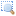
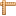

Ayuda para la utilización del mapa
Por defecto la herramienta que aparece activada al acceder al
mapa es la de paneo, que permite mover correr el mapa hacia las zonas
aledañas.
Haciendo doble clic sobre un punto del mapa, se produce un acercamiento a esa zona.
 Agregar capas
Agregar capas
Este botón abre una ventana en donde se puede seleccionar el
origen de los datos, y luego la capa o las capas que se desean agregar
al mapa por medio del botón Agregar capas.
Con una capa seleccionada:
 Eliminar capa
Eliminar capa
 Ver toda la capa
Ver toda la capa
 Propiedades de la capa
Propiedades de la capa
Botón derecho sobre una capa en el árbol de capas de la de izquierda:
Eliminar capa
Ver toda la capa
Propiedades de la capa
Herramientas para manejar el mapa:
 Ver extensión total del mapa
Ver extensión total del mapa
 Zoom sobre el mapa dibujando un rectángulo. Con un clic en el mismo botón, se desactiva la herramienta
 Acercar mapa
Acercar mapa
 Alejar mapa
Alejar mapa
 Ir a la vista anterior
Ir a la vista anterior
 Ir a la vista siguiente
Ir a la vista siguiente
 Información. Se usa para consultar los datos existentes sobre la capa que se clicqueó.
Información. Se usa para consultar los datos existentes sobre la capa que se clicqueó.
 Medir longitudes. Se utiliza haciendo clics sobre el mapa para medir una distancia entre dos puntos o la longitud de una ruta.
Medir áreas. Se usa dibujando un área por medio de clics sobre el mapa.
Buscar un lugar…
Este es un cuadro de texto para introducir el nombre de algún
lugar del país o del mundo para llevar el mapa hacia esa localización.
Luego de agregar un nombre o parte de él, la herramienta muestra una
lista de opciones que pueden ser seleccionadas para realizar el zoom. Es
una herramienta provista por Google.